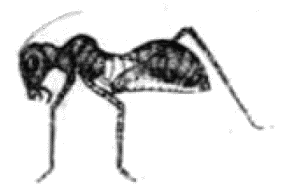

天真爛漫ともいい、「天に
偽りはなきものを」ともいうて、天には偽りはないものと、すでに相場が定まっているようであるが、その天の字を
冠らせた天然界はいかにと見渡すと、ここには詐欺、偽りはきわめて平常のことで数限りなく行なわれている。そのもっともいちじるしい例は小学校用の読本にもでているゆえ、普通教育を受けた者なら誰も知っているであろう。
動物には自身を他物に似せて敵の攻撃をのがれるものがいくらもある。南洋に産する「
木の
葉蝶」、内地いたるところに産する「
桑の
枝尺取り」などはその最も知られた例であるが、「木の葉蝶」は
翅の表面のあざやかなるに似ず、その裏面は全く枯葉のとおりで、葉脈に似た斑紋があり、虫の食うた
孔のごときところもあり、加うるに翅の全形が木の葉の形と寸分もたがわぬゆえ、翅をたたんで枝にとまると、たとい目の前にいても、真の枯葉とまぎらわしく、とうてい発見することはできぬ。また「桑の枝尺取り」というのは一種の
蛾の幼虫で、色も形も桑の短い枝と少しもちがわぬゆえ、この虫が幹からある角度をなして立っていると、だれが見ても、真の桑の枝であるとより思われぬ。百姓がときどきこれを真の枝と間違えて土瓶などを
懸けると、もとより柔かい虫のことゆえ、グニャリと曲がり、そのため往々土瓶を
破ってしまうことがあるので、この虫を一名「土瓶破り」という地方のあるのはもっともなことである。これらは決して珍しい現象ではなく、昆虫類ではきわめて普通なことで、蛾の類などには樹の皮にまぎらわしい色彩、斑紋を有するものがいくらもある。現在そこにいながら、あたかもおらざるごとくに装うて、敵の攻撃をのがれるのであるから、あたかも宅にいながら、借金取りの攻撃をのがれるために不在を装うのと同じで、いずれもまぎれのない
詐欺である。
また動物には他物に身を似せて餌となるべき動物を引き寄せるものがある。樹の葉の上を
徘徊する一種の
蜘蛛は身体の色が全く鳥の糞のとおりで、足をちぢめて静止しているときには真の鳥の糞と区別することが困難である。しかしながらもしそこへ蝶が飛んできて、鳥の糞と誤ってその上にとまると、蜘蛛はたちまちこれを捕え殺して血を吸うてしまう。また同じく樹の葉の上にいる蜘蛛に「
蟻蜘蛛」と名づける一種があるが、これは身体の形状も、色の具合も全く蟻のとおりで、一見したところでは蟻そのままである。蟻は他の昆虫と同じく六本の足と二本のひげとを持っているが、蜘蛛には八本の足があるだけでひげはない。しかして普通の蜘蛛ならば、八本の足で歩くはずのところを、蟻蜘蛛は第二
対以下の六本の足で歩き、第一対の足はあたかも蟻のひげを動かすごとくにつねに動かしている。かくして挙動までが蟻に似ているゆえ、蟻は知らずしてその側へきたり、たちまちこの蜘蛛に食われるのである。アンコウという魚は
蝦蟇口に尾をつけたようなきわめて口の大きな魚であるが、その鼻の辺からはあたかも釣竿のごとき物が出て、竿の先からは細い糸が垂れ、糸の端はやや太くなって虫のごとくに見える。アンコウは海の底に静止し、ただ釣竿だけを動かすと、近辺にいる小魚等は糸の端の虫のごとき部の動くのを見て近づいてくる。その時アンコウは急に大きな口を開いて小魚を丸のみにしてしまうのである。光線の達せぬほどの深い海の底に住むアンコウの類には、糸の端の部があたかも
螢の尻のごとくに光り、暗夜に
提燈を点じたごときありさまで他の小動物を誘い寄せるものがある。
他物で自身をおおいかくして敵の攻撃をのがれるものははなはだ多い。海に住む
蟹には甲の表面全体に海綿海草などを付着せしめて姿をかくしている種類がいくらもある。かかる蟹は静止している間はとうていその蟹なることを識別することはできぬ。壇の浦で有名な
平家蟹などは八本ある足の中の四本を用いて、
蛤のごとき貝の
空殻を背負い、他の四本で
匍うている。静止するとあたかも
泥の上にただ貝の空殻だけが落ちているごとくに見えて、そこに生きた蟹がいるとは誰も気がつかぬ。コチ、カレイのごとき魚類は身体の色が海底の砂の色と同じく、かつ砂に似た模様があるから、海底に横たわっているとなかなか砂と見分けにくい。小さい魚などが知らずに近づいてくると、急に跳ね出してこれを捕える。かくのごとくに敵の攻撃をのがれるため、もしくは餌を捕えるために身体をかくすことは、人間社会でもすこぶる広く行なわれていることであるが、自身は実際そこにいながら、他をして自身のおらぬごとくに信ぜしめるのであるから、もとよりすべて詐欺の範囲内に属する。

蟻に似たイナゴ
なおはなはだしいのは自身は弱者でありながら、容貌を強者に似せて世を渡ろうとする者である。これも昆虫にその例が多い。
蜂は剣をもって刺すゆえ、昆虫界では強者であって、たいがいの鳥類はこれを恐れてついばまない。ところが、この点を利用して蜂と見誤られるために色も形も蜂に似せた昆虫が蜂以外の類にすこぶる多い。例えば、蛾の中にも全く蜂とまぎらわしいような種類が幾種もある、甲虫の中にもすこぶる蜂に似たものがある。また蟻は一匹ずつをとればかならずしもはなはだ強いとはいわれぬが、大きな団体を造って力をあわせて生活するものゆえ、全体としてはすこぶる有力な昆虫である。それゆえ、これに身を似せた昆虫ははなはだ多い。中にはイナゴの類で身体を蟻に似せている虫があるが、その体の色彩がすこぶるおもしろい。蟻は胴の中ほどにきわめて細いくびれたところがあるが、イナゴの身体にはかような細い部分はない。それゆえイナゴが蟻に似るためには胴の中ほどの細くなることが必要であるが、実際かくすれば内部の臓腑の位置から変わらねばならず、非常に困難でほとんどとうていできぬことである。そのためイナゴは色彩で蟻のごとくに見えるようにごまかして、実際の胴は太いところへ蟻のごとき色の細い線が現われ、横から見るとあたかも蟻のごとくに胴がくびれているように見える。また南アメリカのある地方では一種の蟻が一匹ごとに必ず緑色の小さな木の葉を口にくわえ、まるで人間が傘をさしているごとくにして歩くが、そこには蟻と全く種類の違う昆虫で、頭から背中まで緑色を呈して、木の葉をかざしたままの蟻と寸分も違わぬ種類がある。これらは人間にくらべたならば、あたかも盗賊が制服を着して学校の生徒控所などへはいり込むのと同じで、実に巧みな詐欺の方法である。
昆虫の幼虫などには自分より強い敵に出遇うたときに
虚喝をもってこれを追い退ける者がある。ある
蛾の幼虫には背の前部に左右二つの大きないちじるしい
蛇の
目の斑紋があるが、この虫は敵に遇うと、たちまち体の前部をちぢめて太くする。かくすると、蛇の目の紋が左右ならんで前を向き、全部があたかも仮面のごとくになり、猿か猫かの顔のごとき形を現わすゆえ、たいがいの鳥類ならばたちまち驚いて逃げてしまう。これも実際に何の力もない弱い者が非常に強き者であるかのごとき姿勢を示して敵を欺くのであるからもとより一種の詐欺である。
また死んだまねをして敵の攻撃をのがれる虫もある。
蜘蛛などは、誰でも自分でためして容易に知りうるごとく、少しでも触れると、早速巣から地上へ落ちて
暫時はあたかも死んだかのごとくに少しも動かずにいる。昆虫を捕えて食する動物は多くは昆虫の生きて動いているときにのみこれを捕えるもので、
蛙のごときも、動かぬ物にはいっさい見向きもせぬ。それゆえ、蜘蛛なども死んだまねをして動かずにおれば多くの敵からのがれることができる。獣類の中でも小形のものには往々この性質が備わって、打たれても蹴られても少しも動かず、敵の全く遠ざかるまではいつまでも全く死んだごとくに装うているものがある。この方法は「二人の朋友と熊」というイソップ物語の話のなかの一人が熊の攻撃をのがれるために用いたもので、時に臨んでは唯一の有効な方法である。
以上少数の例をあげて示したごとく、詐欺、偽り、他をだますということは自然界にはきわめて普通なことで、とうていかぞえつくすことはできぬ。少しくつまびらかに調べさえすれば、ほとんどいたるところにその例を発見する。海岸へ行って、
浪打ちぎわの岩石の表面などを見ると、すべての動物があるいは砂をかぶったりあるいは色を似せたりなどして、一見岩とまぎらわしいように装うている。また船に乗って沖へ出て見ると、海岸に浮かんでいる動物には、ガラスのごとくに無色透明で、目の前にいても慣れぬ人には全く見えぬものが多い。さてかように種々の動物が、詐欺に力をつくしているのは何のためであるかというに、これは全く生活のため、自衛のためで、いずれも他を食うため、他に食われぬために、かく偽っているのである。自然界における野生の動物の生活を見るに、その生活、自衛の方法は暴力によると詐欺を用いるとの二つよりないゆえ、この二者は結局同一の目的を達するための異なった手段というだけで、いずれをまされりとも、いずれを劣れりとも言うことのできぬ対等のものと見なさざるをえない。すなわち時と場合と相手とに応じて、あるいは暴力のほうが有効なこともあれば、あるいは詐欺のほうが得策なることもある。彼よりも我のほうが力強いときは、暴力に訴えるほうが勝負もはやく結果も確かであるが、我よりも彼の力がまさっていることの明らかな場合には詐欺よりほかに取るべき手段はない。また我の力がはるかにまさっているときにでも、暴力よりも詐欺によったほうが、労少なくして効の多い場合ももちろんあろう。
およそ自然物を通覧するに、同一の目的を達するために二種以上の手段がそろうて完全に発達している例は決してない。よく飛ぶ鳥は足が弱く、よく走る鳥は
翅が小さい。たくみにおよぐものは
樹に登りえず、たくみに枝を渡るものは地に穴をうがちえない。
角あれば
牙なく、
鱗あれば髪がないというように、必ず一方の手段である目的を達しえられる程度までに進んでいるだけで、決してその上に同一の目的のための他の手段が並び発達するということはない。まして梅が香を桜の花に移し、柳の枝に咲かせるというような三方に充分なるごときはとうてい望まれぬことである。昔から天道は満つるを
虧き、足らざるを補うというのはこの意味であろう。されば生活自衛の手段なる暴力と詐欺のごときもこの理に漏れず、詐欺の方法の充分に整うている動物は概して弱く、また弱い動物が概して詐欺を用いる。前の例にあげたごとき動物はいずれも弱いものばかりで、詐欺によらなければとうてい世に処する途のないものである。鯨のごとき強い者は少しも詐欺を行なうの必要はない。
前のたとえに引いた「二人の朋友と熊」という話の中にある男は、熊が死んだ物を食わぬことをつねから聞き知っていて、自分の腕力がとうてい熊にかなわぬことも明らかに知っていたゆえ、熊に出遇うたときに死んだ真似をして危険をのがれたのであるが、かりにかの男が熊よりも数倍も力が強くて、ひとつかみに熊をつぶしえたと仮定したならば、かれはいかに処置したであろうかと考えるに、彼は決して詐欺によらず暴力のほうをとっていたに違いない。自然界における動物の行為もこれと同様で、ある動物は暴力によって他を食うように他に食われぬようにとつとめ、ある動物は詐欺によって他を食うように他に食われぬようにつとめているのである。これはいやしくも生活している以上はやむをえぬことで、いかなる動物といえども、その生命を保たんとする以上は、暴力か詐欺かのうち、いずれか一をとるのほかはない。されば虚心平気に自然界を見渡せば、詐欺は暴力と相並んで生活自衛に必要な手段として存するので、野生の動物がつねにその中のいずれかを用いておるのはもとより当然のことである。
かく論じてみると、暴力と詐欺との行なわれぬところはないごとくに聞えるが、実際においては天然界の中には暴力と詐欺との行なわれぬところがある。それは完結した団体生活をなす動物の同一団体内においてである。かかる動物では生存競争の単位は団体と団体とが相対して争うているのであるゆえ、同一団体内の各個体間に暴力や詐欺が行なわれるようでは、その団体としての力がはなはだ弱くなって、とうてい敵なる団体に打ち勝つことはできぬ。団体生活をなす動物では生存競争の結果、適する団体はますます繁栄し、適せぬ団体は次第に滅び
失せ、自然
淘汰が行なわれて団体を勝たしめた性質は一代ごとに進歩し、ついには同一団体内の個体間には少しも暴力と詐欺とが行なわれず、すべての個体が力をあわせて、外に向うて暴力もしくは詐欺をたくましうすることのできる程度までに達する。
蟻や
蜂は今日すでにかような階段に達しているのである。要するに団体生活を営む動物にあっては、団体内の個体間における暴力と詐欺との使用を抑圧するのは生存上もっとも必要な条件で、この点で他におとったものはとうてい生存の望みはない。かかる動物の競争は、一面この点で競争しているのである。生存競争の単位なる一団体内において、個体間の暴力および詐欺を抑圧することがいくぶんかでもゆるんだならば、その団体の前途はすこぶる危いものと言わなければならぬ。
以上述べたところを約言すれば、詐欺、偽りは暴力とともに自然界に最も広く行なわれていることで、それ自身のみについて言えば、単に生活自衛の一手段に過ぎず、善悪の二字をもって批評すべき範囲以外に位する。ただ団体生活をなす動物では、生存競争の単位なる一団体のうちで個体間に詐欺暴力の行なわれることは、その団体の維持繁栄のためにすこぶる有害であるゆえ、もしある団体動物が他に負けぬように長く生存して勢力を発展させようと思えば、適宜の方法によってできるだけ個体間の詐欺、暴力を抑圧することが何よりも先に必要である。右は動物界全部を広く比較しての論であるが、最高等の動物のみにあてはめても理屈は全く同様であろう。
（明治三十九年十一月）